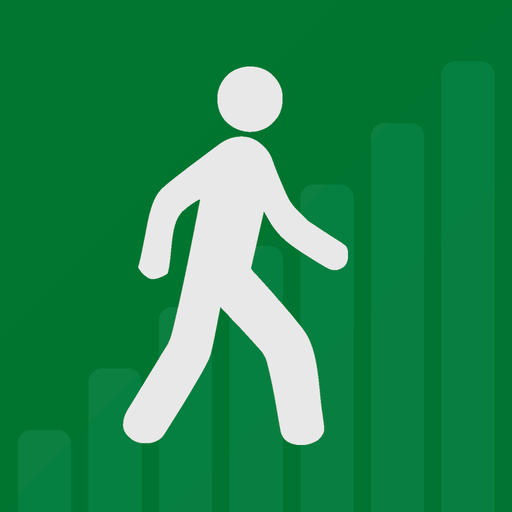

Marcher, mesurer, progresser
- Chronomètre, distance et pas pendant la séance, même téléphone en poche.
- Vos pauses enregistrées, et la distance avant la première pause.
- Graphique d'évolution et rappels quotidiens.
- Export de votre journal en PDF. 16 langues.
Gratuit, sans compte et sans publicité. Ni nom ni e-mail demandé : vos séances restent sur votre téléphone.
Disponible sur Google Play Politique de confidentialitéWandelen, meten, vooruitgaan
- Chrono, afstand en stappen tijdens de sessie, ook met de telefoon in uw zak.
- Uw pauzes geregistreerd, en de afstand tot de eerste pauze.
- Evolutiegrafiek en dagelijkse herinneringen.
- Export van uw dagboek als pdf. 16 talen.
Gratis, zonder account en zonder reclame. Geen naam of e-mailadres gevraagd: uw sessies blijven op uw telefoon.
Beschikbaar op Google Play PrivacybeleidWalk, measure, progress
- Timer, distance and steps during the session, even with the phone in your pocket.
- Your breaks recorded, and the distance before the first break.
- Progress chart and daily reminders.
- Export your journal as a PDF. 16 languages.
Free, no account and no ads. No name or email required: your sessions stay on your phone.
Get it on Google Play Privacy policyWalkbook n'a pas de serveur : vos séances sont enregistrées uniquement sur votre téléphone. Avant de changer de téléphone, exportez votre journal en PDF pour le conserver.
Walkbook heeft geen server: uw sessies worden uitsluitend op uw telefoon opgeslagen. Exporteer uw dagboek als pdf voordat u van telefoon verandert, om het te bewaren.
Walkbook has no server: your sessions are stored on your phone only. Before switching phones, export your journal as a PDF to keep it.